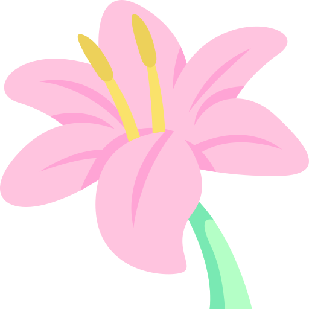
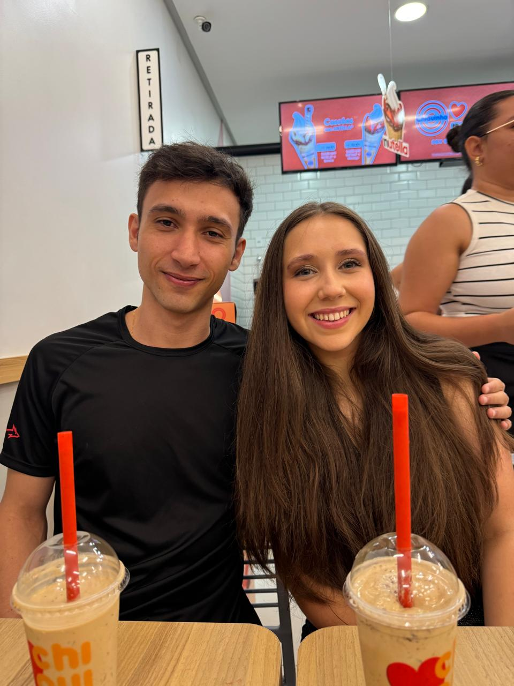

My Dearest Princess Aisling,
"I am so deeply sorry that..."
That's what I was going to do. But then I stopped.
I realized, you deserve something more special.
Because,
You are very special to me.
I want you to know, from the deepest part of my heart, how much I love you.
SO

Let me show a little bit what it’s like to see you through my eyes
Choosing the person you want to share your life with is one of the most important decisions anyone can make.
And I want you to know why I want to share my life with you.
Because you are an amazing person, and I admire you in so many ways.
For the past few months, you have been my first and last thought of the day, and you still are.
-
I love your company
I fell for you because... I really enjoyed spending time together.
I think one of the most important things in a relationship is being friends first, and I loved all the days we spent just getting to know each other. Hearing about your life, your family, your dreams, even your favorite songs and ice cream flavors—it all made me love you more. I fell for you because I got to know you as a person first, and that’s what made everything so special.
-
I love how you make me feel
I fell for you because... you're a much better person than I am.
You're smart, empathetic, loving, kind, strong, beautiful, and funny (though I think you're still working on that last one). Just kidding, you're actually really funny. You're everything I want to be with, and everything I want to be for. You're everything I hope to have in my life, now and for the rest of it.
-
I love that you care
I fell for you because... of your incredible empathy.
The way you care for others is something I deeply admire.
You can truly see a person's heart by how they treat those around them, and your kindness shines through in everything you do.
You're someone I can rely on in difficult times, and I know you would never intentionally hurt me, as your heart is filled with genuine love.
And that's the kind of person I want by my side.
-
I love how you see life
I fell for you because... I admire the way you see the world.
You have this amazing perspective on life, always wanting to make the most of it, and that’s something I want to be a part of.
Being with you made me realize that life is short, and living for someone you love is such a powerful act of love.
I want to live for you, to do my best every day to make you as happy as you already make me.
-
I love that you trusted me
I fell for you because... you made me feel special.
I know you've been through a tough relationship, and it left you heartbroken.
Despite that, you still chose to open up to me about how you feel about love, and I really appreciate that.
It means a lot that you trust me with your feelings, and I’m grateful for the chance to be a part of your life.
